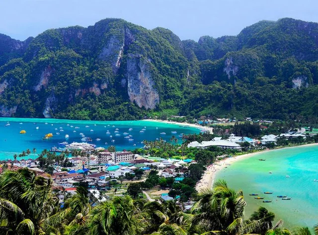
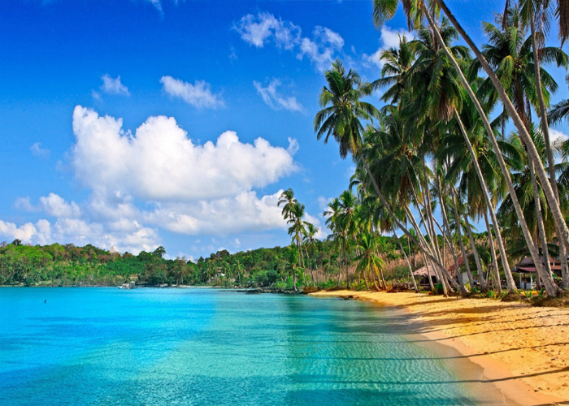

Tourism in the Andaman and Nicobar Islands, a group of islands in the Bay of Bengal, is characterized by its stunning natural beauty, pristine beaches, rich marine biodiversity, and vibrant cultural heritage. Here's an overview of tourism in the Andaman Islands.
The Andaman Islands are renowned for their picturesque beaches with soft white sand and crystal-clear turquoise waters. Some of the most popular beaches include Radhanagar Beach on Havelock Island, known for its breathtaking sunset views and pristine shoreline; and Elephant Beach, famous for its vibrant coral reefs and excellent snorkeling opportunities.
The Andaman Islands offer a plethora of water sports activities for adventure enthusiasts. From snorkeling and scuba diving to sea walking and parasailing, visitors can explore the vibrant underwater world teeming with colorful coral reefs, exotic marine life, and fascinating shipwrecks.
The Andaman Islands have a rich history associated with their role as a colonial outpost and as a penal colony during British rule. Visitors can explore historical sites such as Cellular Jail in Port Blair, a national memorial that bears testimony to the island's tumultuous past; and Ross Island, once the administrative headquarters of the British in the Andaman Islands, now adorned with colonial ruins and scenic vistas.
MOST BEAUTIFUL PLACES TO VISIT IN ANDAMAN